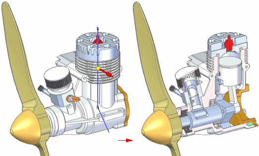

Displaying assemblies
Solid Edge has a variety of commands and options to better visualize or display parts and assemblies. This includes exploding and rendering assemblies, animating assemblies as well as providing alternate views and section views of assemblies. These options provide designers and developers the ability to better communicate their ideas for presentations as well as providing more functional information for manufacturing and fabrication. Displaying assemblies in different forms for different purposes is a major activity of the Assembly environment.
Activities associated with displaying an assembly
The following activities are associated with displaying assemblies:
-
Solid Edge has functionality to create exploded views of assemblies. Use the exploded views you define in the Assembly environment to create exploded assembly drawings in the Draft environment. Presentation-quality renderings and animations of exploded assemblies can also be created (see Creating exploded views of assemblies for additional information).

-
Solid Edge has functionality to create animated presentations of assemblies. Assembly animations can be useful for motion studies of mechanisms, visualizing how parts are assembled into a completed assembly, and vender or customer presentations (see Creating assembly animations for more information). High-quality, fully-rendered animations can be created using KeyShot (see KeyShot rendering and Workflow for animating with KeyShot for more information).
-
To visualize and verify assemblies using motors and simulations see Verifying assemblies for more information.
-
Solid Edge also has functionality to simulate cutting away material from the model to see internal features. This is referred to as a 3D section view. A 3D section view is created using the Section command in the Assembly environment, the Part environment, and the Sheet Metal environment (see 3D section views of models for additional information).

Suppressing and unsuppressing components in an assembly
You can right click objects such as parts, pipes, frames and end caps in PathFinder or the graphics window of an assembly and use Suppress and Unsuppress commands to suppress or unsuppress the selected object.
When you suppress an component, any relationships for the object are suppressed and appear as unavailable in PathFinder. When you unsuppress the component, the relationships are restored.
If you suppress a sub-assembly, all parts associated with the sub-assembly are suppressed. You cannot suppress individual part occurrences from the sub-assembly.
After suppressing a component, you can right-click the assembly in PathFinder and choose Remove Suppress Components from the menu to remove the suppressed component from PathFinder.
After suppressing a component, you can right-click the assembly in PathFinder and choose Keep Suppress Components to keep the suppressed component in PathFinder.
You can use the Add Suppression Variable command to suppress components. The command adds a variable to the Variable Table.
You can use the Delete Suppression Variable command to delete the suppression variable.